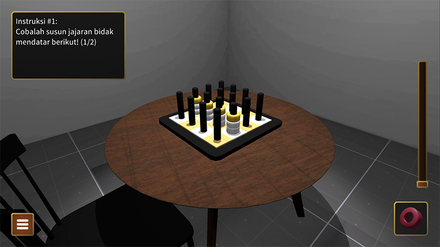
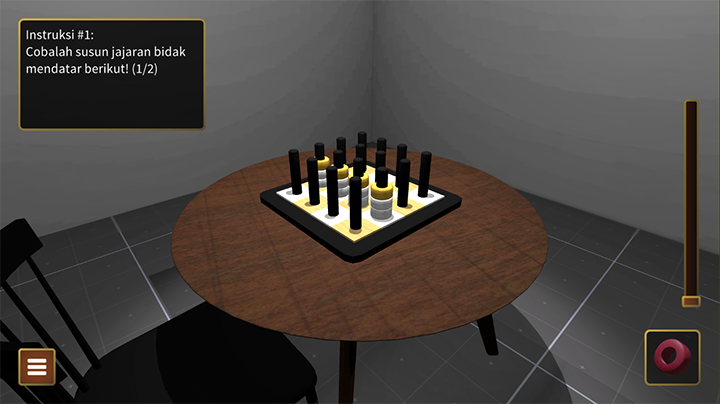

TicTacToe 3D
3D Tic Tac Toe is a unique twist on the traditional tic-tac-toe game, expanding the gameplay into a three-dimensional space with x, y, and z axes. This added dimension transforms the classic 3x3 grid into a 3x3x3 cube, providing players with a more challenging and strategic experience as they can now form lines in multiple directions across three dimensions. Currently this game only available on Android phone, you can download it here.
I developed this game independently for a client, handling every aspect of the project from start to finish. The result is an engaging and visually immersive version of tic-tac-toe that pushes players to think beyond the usual two-dimensional strategies, creating a more complex and dynamic game environment. The game challenges players to form a line of three in any direction—horizontally, vertically, or diagonally—adding depth and excitement to a timeless favorite.
 
